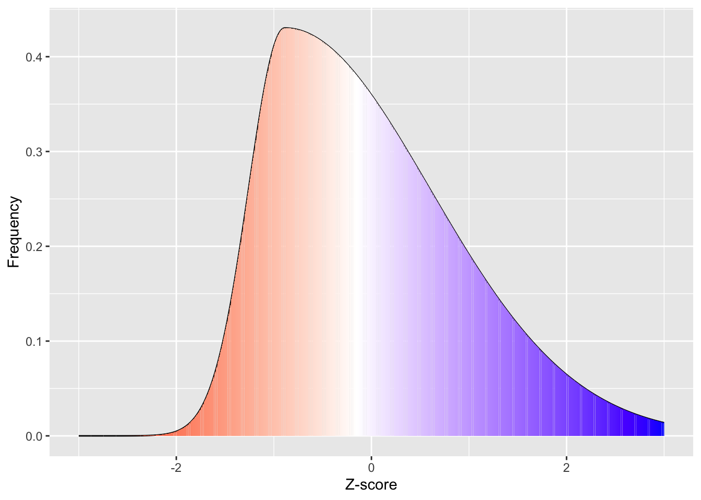

import numpy as npimport matplotlib as mplfrom scipy.stats import normimport matplotlib.pyplot as pltnorm_x = np.arange(-4.0, 4.1, 0.1)norm_y = norm.pdf(norm_x, loc=0, scale=1)colourmap = mpl.cm.get_cmap('jet')fig, ax = plt.subplots()fig.set_figheight(7)fig.set_figwidth(10)ax.plot(norm_x, norm_y, color='black', alpha=1.00)normalize = mpl.colors.Normalize(vmin=norm_y.min(), vmax=norm_y.max())npts =80for i inrange(npts -1): plt.fill_between([norm_x[i], norm_x[i+1]], [norm_y[i], norm_y[i+1]], color=colourmap(normalize(norm_y[i])) ,alpha=0.6)plt.text(2.05, 0.001, '100%', fontsize =10)plt.text(1.2, 0.001, '97.7%', fontsize =10)plt.text(0.2, 0.001, '84.1%', fontsize =10)plt.text(-0.7, 0.001, '50%', fontsize =10)plt.text(-1.8, 0.001, '34.1%', fontsize =10)plt.text(-2.7, 0.001, '13.6%', fontsize =10)plt.axvline(x=-2, color='black', ls='-', lw=1)plt.axvline(x=-1, color='black', ls='-', lw=1)plt.axvline(x=0, color='black', ls='-', lw=1)plt.axvline(x=1, color='black', ls='-', lw=1)plt.axvline(x=2, color='black', ls='-', lw=1)# add title on the x-axisplt.xlabel("Z-score")# add title on the y-axisplt.ylabel("Frequency")# show the plotplt.show()
White in the above figure represents the median. Note that the mean and median overlap in a normal distribution.
If your data fits a normal distribution, then you can draw conclusions based on certain facts about this distribution, e.g. the fact that 97.7% of your population should have a score that is more negative than +2 standard deviations above the mean (because Z-scores represent standard deviations from the mean). As a result, if your data is skewed:
from scipy.stats import skewnormnorm_x = np.arange(-3.0, 3.1, 0.1)norm_y = norm.pdf(norm_x, loc=0, scale=1)norm_y = skewnorm.pdf(norm_x, a=-2)colourmap = mpl.cm.get_cmap('jet')fig, ax = plt.subplots()fig.set_figheight(7)fig.set_figwidth(10)ax.plot(norm_x, norm_y, color='black', alpha=1.00)normalize = mpl.colors.Normalize(vmin=norm_y.min(), vmax=norm_y.max())npts =60for i inrange(npts -1): plt.fill_between([norm_x[i], norm_x[i+1]], [norm_y[i], norm_y[i+1]], color=colourmap(normalize(norm_y[i])) ,alpha=0.5)plt.axvline(x=-0.5, color='white', ls='-', lw=1)# add title on the x-axisplt.xlabel("Z-score")# add title on the y-axisplt.ylabel("Frequency")# show the plotplt.show()
Skewed Distribution
White represents the median in the figure above. As you can see from the above skewed distribution, the median is below the mean, consistent with the data being skewed. Importantly, the assumptions that we can make about what proportion of the population are 1 standard deviation above and below the mean are no longer valid, as more than half the population are below the mean in this case. This would suggest that non-parametric analyses could be more appropriate if your data is skewed.
So now that we know what skewed distributions look like, we now need to quantify how much of a problem with skewness there is.
The next section is a breakdown of the formula for those interested in it (but this is not crucial).
Optional
If we want to manually calculate skewness:
\[
\tilde{\mu_{3}} = \sum((\frac{x_i- \bar{x}{}} {\sigma} )^3) * \frac{N}{(N-1) * (N-2)}
\] To do this in R you could calculate it manually. We’ll use Gapminder’s data from 2007:
library(gapminder)# create a new data frame that only focuses on data from 2007gapminder_2007 <-subset( gapminder, # the data set year ==2007)hist(gapminder_2007$lifeExp)

positive_skew_n =length(gapminder_2007$lifeExp)positive_skewness =sum(((gapminder_2007$lifeExp -mean(gapminder_2007$lifeExp))/sd(gapminder_2007$lifeExp))^3) * ( positive_skew_n / ((positive_skew_n-1) * (positive_skew_n -2)))# to show the output:positive_skewness
[1] -0.6887771
import matplotlib.pyplot as pltimport numpy as npimport math# load the gapminder module and import the gapminder datasetfrom gapminder import gapminder# create a new data frame that only focuses on data from 2007gapminder_2007 = gapminder.loc[gapminder['year'] ==2007]fig, ax = plt.subplots(figsize =(7, 5))ax.hist(gapminder_2007['lifeExp'], bins=10, color='grey',edgecolor ="black", alpha =0.8)# add title on the x-axisplt.xlabel("gapminder_2007['lifeExp']")# add title on the y-axisplt.ylabel("Frequency")# show the plotplt.show()positive_skew_n =len(gapminder_2007['lifeExp'])positive_skewness =sum(((gapminder_2007['lifeExp'] - gapminder_2007['lifeExp'].mean())/gapminder_2007['lifeExp'].std())**3) * ( positive_skew_n / ((positive_skew_n-1) * (positive_skew_n -2)))# to show the output:positive_skewness
Histogram of ‘lifeExp’
-0.68877706485775
… or just
Use code from https://stackoverflow.com/a/54369572 to give you values for skewness (this has been chosen as this gives skewness and its standard error as calculated by major software like SPSS and JASP):
# Skewness and kurtosis and their standard errors as implement by SPSS## Reference: pp 451-452 of# http://support.spss.com/ProductsExt/SPSS/Documentation/Manuals/16.0/SPSS 16.0 Algorithms.pdf# # See also: Suggestion for Using Powerful and Informative Tests of Normality,# Ralph B. D'Agostino, Albert Belanger, Ralph B. D'Agostino, Jr.,# The American Statistician, Vol. 44, No. 4 (Nov., 1990), pp. 316-321spssSkewKurtosis=function(x) { w=length(x) m1=mean(x) m2=sum((x-m1)^2) m3=sum((x-m1)^3) m4=sum((x-m1)^4) s1=sd(x) skew=w*m3/(w-1)/(w-2)/s1^3 sdskew=sqrt( 6*w*(w-1) / ((w-2)*(w+1)*(w+3)) ) kurtosis=(w*(w+1)*m4 -3*m2^2*(w-1)) / ((w-1)*(w-2)*(w-3)*s1^4) sdkurtosis=sqrt( 4*(w^2-1) * sdskew^2/ ((w-3)*(w+5)) )## z-scores added by reading-psych zskew = skew/sdskew zkurtosis = kurtosis/sdkurtosis mat=matrix(c(skew,kurtosis, sdskew,sdkurtosis, zskew, zkurtosis), 2,dimnames=list(c("skew","kurtosis"), c("estimate","se","zScore")))return(mat)}spssSkewKurtosis(gapminder_2007$lifeExp)
# Skewness and kurtosis and their standard errors as implement by SPSS## Reference: pp 451-452 of# http://support.spss.com/ProductsExt/SPSS/Documentation/Manuals/16.0/SPSS 16.0 Algorithms.pdf# # See also: Suggestion for Using Powerful and Informative Tests of Normality,# Ralph B. D'Agostino, Albert Belanger, Ralph B. D'Agostino, Jr.,# The American Statistician, Vol. 44, No. 4 (Nov., 1990), pp. 316-321def spssSkewKurtosis(x):import pandas as pdimport math w=len(x) m1=x.mean() m2=sum((x-m1)**2) m3=sum((x-m1)**3) m4=sum((x-m1)**4) s1=(x).std() skew=w*m3/(w-1)/(w-2)/s1**3 sdskew=math.sqrt( 6*w*(w-1) / ((w-2)*(w+1)*(w+3)) ) kurtosis=(w*(w+1)*m4 -3*m2**2*(w-1)) / ((w-1)*(w-2)*(w-3)*s1**4) sdkurtosis=math.sqrt( 4*(w**2-1) * sdskew**2/ ((w-3)*(w+5)) )## z-scores added by reading-psych zskew = skew/sdskew zkurtosis = kurtosis/sdkurtosis mat = pd.DataFrame([[skew, sdskew, zskew],[kurtosis, sdkurtosis, zkurtosis]], columns=['estimate','se','zScore'], index=['skew','kurtosis'])return matspssSkewKurtosis(gapminder_2007["lifeExp"])
Skewness and Kurtosis of ‘lifeExp’
The above function generated three columns: \(estimate\) of skewness (and kurtosis, but we’ll deal with kurtosis separately, \(standard\)\(error\) (SE) and the \(skewness_z\) score. Z-scores can capture how unlikely the \(skewness\) estimate is considering what you would normally expect. In this case, when you divide skewness by standard error, you get a z-score, and if the absolute value (i.e. ignoring whether it is positive or negative) of the z-score is greater than 1.96 then it is significantly skewed. If you want to understand why 1.96 is the main number, check out the subsection on normal distributions.
One way to deal with skewed data is to transform the data.
Consolidation questions
Question 1
rand_skew_no =Math.round(Math.random() *400)/100;
Is a skewness z-score of indicative of a significant problem of skewness?
viewof skewness_question_1_response = Inputs.radio(["Yes","No"], {label:"",value:"A"});this_result = { var skewness_question_1_result ="awaiting response";if(rand_skew_no >1.96){if(skewness_question_1_response =="Yes"){ skewness_question_1_result ="Correct - Z scores above 1.96 suggest significant problems with skewness"; } elseif(skewness_question_1_response =="No") { skewness_question_1_result ="Not Correct - Z scores above 1.96 suggest significant problems with skewness"; } } else {if(skewness_question_1_response =="Yes"){ skewness_question_1_result ="Not Correct - Z scores below 1.96 **do not** suggest significant problems with skewness"; } elseif(skewness_question_1_response =="No") { skewness_question_1_result ="Correct - Z scores below 1.96 **do not** suggest significant problems with skewness"; } }return skewness_question_1_result;}

 White in the above figure represents the median. Note that the mean and median overlap in a normal distribution.
White in the above figure represents the median. Note that the mean and median overlap in a normal distribution.